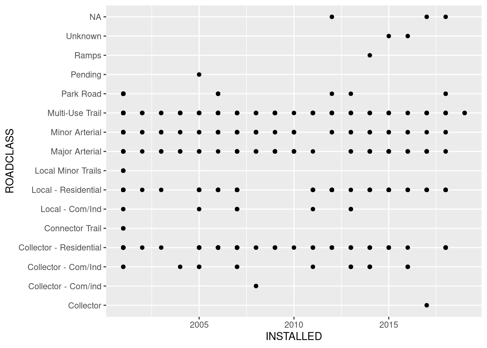
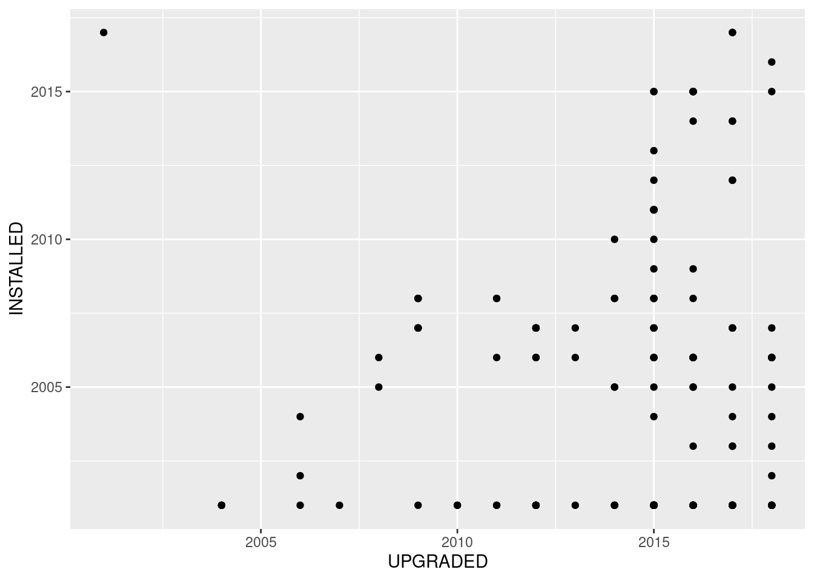

library(readr)
library(tidyverse)
library(janitor)
library(ggplot2)
library(rgdal)Toronto Cycling Traffic and Bikeway Open Data
bike_network_data <- read_csv("Bikeway Data/Bike network data.csv",
col_types = cols(`_id` = col_integer(),
OBJECTID = col_integer(), SEGMENT_ID = col_double(),
LAST_EDIT_DATE = col_datetime(format = "%Y-%m-%dT%H:%M:%S")))
bike_network_data %>%
glimpse()Rows: 1,262
Columns: 28
$ `_id` <int> 3787, 3788, 3789, 3790, 3791, 3792, 3793, 3794, 37…
$ OBJECTID <int> 1, 2, 3, 4, 5, 6, 7, 8, 9, 10, 11, 12, 13, 14, 15,…
$ SEGMENT_ID <dbl> 1, 2, 3, 4, 5, 6, 7, 8, 11, 13, 14, 15, 16, 17, 18…
$ INSTALLED <dbl> 2001, 2001, 2001, 2001, 2001, 2001, 2001, 2001, 20…
$ UPGRADED <dbl> 2007, 2009, 2011, 2011, 2012, 2012, 2012, 2018, 20…
$ PRE_AMALGAMATION <chr> "Yes", "Yes", "Yes", "Yes", "Yes", "Yes", "Yes", "…
$ STREET_NAME <chr> "Kilbarry Rd", "Martin Goodman / Waterfront Trl", …
$ FROM_STREET <chr> "Highbourne Rd", "Lake Shore Blvd W", "Givendale R…
$ TO_STREET <chr> "Oriole Pkwy", "Martin Goodman Trl Branch", "Kenne…
$ ROADCLASS <chr> "Collector - Residential", "Multi-Use Trail", "Mul…
$ CNPCLASS <chr> "Fast Busy Street", "Multi-Use Trail", "Multi-Use …
$ SURFACE <chr> "Asphalt", "Asphalt", "Asphalt", "Asphalt", "Aspha…
$ OWNER <chr> NA, "PF&R", "PF&R", NA, "PF&R", NA, NA, "TS", "PF&…
$ DIR_LOWORDER <chr> "W", "W", "W", "N", "N", "N", "E", "W", "N", "E", …
$ INFRA_LOWORDER <chr> "Bike Lane", "MUT (2016 Network Plan/2012 Trails P…
$ SEPA_LOWORDER <chr> "Paint", NA, NA, NA, NA, NA, NA, "Paint", NA, NA, …
$ SEPB_LOWORDER <chr> NA, NA, NA, NA, NA, NA, NA, NA, NA, NA, NA, NA, NA…
$ ORIG_LOWORDER_INFRA <chr> "Sharrows", "Multi-Use Trail", "Multi-Use Trail", …
$ DIR_HIGHORDER <chr> "E", "E", "E", "S", "S", "S", "W", "E", "S", "W", …
$ INFRA_HIGHORDER <chr> "Bike Lane", "Multi-Use Trail", "Multi-Use Trail",…
$ SEPA_HIGHORDER <chr> "Paint", NA, NA, NA, NA, NA, NA, "Paint", NA, NA, …
$ SEPB_HIGHORDER <chr> NA, NA, NA, NA, NA, NA, NA, NA, NA, NA, NA, NA, NA…
$ ORIG_HIGHORDER <chr> "Sharrows", "Multi-Use Trail", "Multi-Use Trail", …
$ BYLAWED <chr> "Yes", NA, NA, NA, NA, NA, NA, "Yes", NA, NA, "Yes…
$ LAST_EDIT_DATE <dttm> 2019-08-15 16:04:01, 2019-08-15 16:04:01, 2019-08…
$ UPGRADE_DESCRIPTION <chr> NA, NA, NA, NA, NA, NA, NA, NA, NA, NA, NA, NA, NA…
$ Shape__Length <dbl> 128.04521, 128.68623, 379.78930, 552.49943, 152.15…
$ geometry <chr> "{u'type': u'MultiLineString', u'coordinates': (((…bike_network_data %>%
drop_na(INSTALLED) %>%
filter(INSTALLED != 0) %>%
ggplot(mapping = aes(x = INSTALLED, y = ROADCLASS)) +
geom_point()
bike_network_data %>%
drop_na(UPGRADED) %>%
filter(UPGRADED != 0) %>%
ggplot(mapping = aes(y = INSTALLED, x = UPGRADED)) +
geom_point()
bike_network_data# A tibble: 1,262 × 28
`_id` OBJEC…¹ SEGME…² INSTA…³ UPGRA…⁴ PRE_A…⁵ STREE…⁶ FROM_…⁷ TO_ST…⁸ ROADC…⁹
<int> <int> <dbl> <dbl> <dbl> <chr> <chr> <chr> <chr> <chr>
1 3787 1 1 2001 2007 Yes Kilbar… Highbo… Oriole… Collec…
2 3788 2 2 2001 2009 Yes Martin… Lake S… Martin… Multi-…
3 3789 3 3 2001 2011 Yes Gatine… Givend… Kenned… Multi-…
4 3790 4 4 2001 2011 Yes G Ross… Duffer… G Ross… Multi-…
5 3791 5 5 2001 2012 Yes Etobic… Etobic… Forty … Multi-…
6 3792 6 6 2001 2012 Yes Marie … Waterf… Forty … Multi-…
7 3793 7 7 2001 2012 Yes West D… West D… C N R Multi-…
8 3794 8 8 2001 2018 Yes Bloor … Parlia… Prince… Major …
9 3795 9 11 2001 2017 Yes Corona… Rememb… Rememb… Multi-…
10 3796 10 13 2001 2014 No Sherwo… Burke … Bayvie… Multi-…
# … with 1,252 more rows, 18 more variables: CNPCLASS <chr>, SURFACE <chr>,
# OWNER <chr>, DIR_LOWORDER <chr>, INFRA_LOWORDER <chr>, SEPA_LOWORDER <chr>,
# SEPB_LOWORDER <chr>, ORIG_LOWORDER_INFRA <chr>, DIR_HIGHORDER <chr>,
# INFRA_HIGHORDER <chr>, SEPA_HIGHORDER <chr>, SEPB_HIGHORDER <chr>,
# ORIG_HIGHORDER <chr>, BYLAWED <chr>, LAST_EDIT_DATE <dttm>,
# UPGRADE_DESCRIPTION <chr>, Shape__Length <dbl>, geometry <chr>, and
# abbreviated variable names ¹OBJECTID, ²SEGMENT_ID, ³INSTALLED, ⁴UPGRADED, …my_spdf <- rgdal::readOGR(
dsn= paste0(getwd(),"/Bikeway Data/CENTRELINE_BIKEWAY_OD_WGS84.shp"),
verbose=FALSE
)